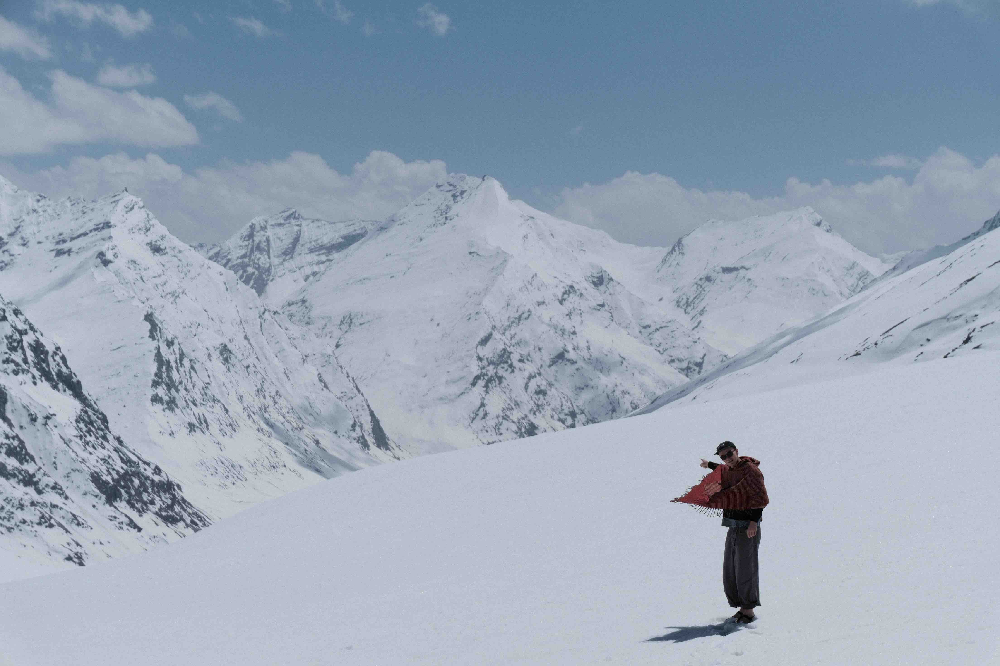

Himalayas Make Me Barf
I did not know India stretched north enough to reach the himalays. But it does. Me and my freinds took a looong bus ride from the valley up 6,000 feet to a city just below the famous towering mountains. The HIMALAYAS!
The streets were narrow. Because they must have been built a hundred years ago, they were no designed with cars in mind. I can imagine a long time ago when these streets were filled with people and some yaks. But now these streets are absoloutly infested with cars. They speed up and down the narrow mountain roads leaving no room at all for people. It's annoying because you'll constantly be honked at. The drivers here are proffesionals because they are zooming up and down the narrow streets

We rented a car that would drive us up as high as a car could go. We tetered along the winding roads, our driver felt more like an F1 driver he was so fast and blah blah blah. As we climbed the trees dissapeared. The buildings thinned. And soon was replaced with snow. Most of the people up there were Indians from south of the country. They have enough money to travel and they chose to come here. Most had never seen snow before. They were so excited jumping around in their snow suits. We drove past them all the way up to the tippy top of the pass, 16,000 feet. The highest I have ever been. I ran out in the snow and my sandals so Georgia could get this great picture of me. The roads hidden by the rolling white hills, it looked like I wandered up this mountain in just my sandals. So I like that photo. And Georgia did a great job taking it. My poncho also looks really great.
The drive down is where I fell apart. I think a mix of the alititude.
-Alec